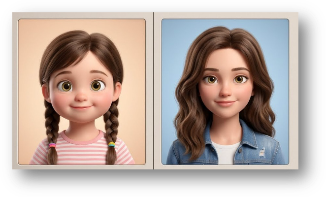
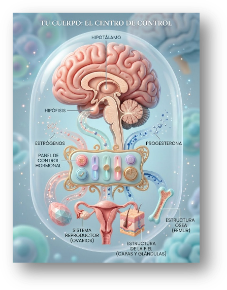
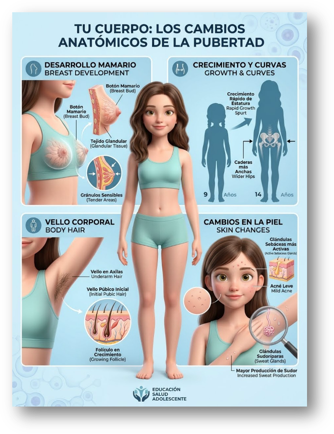

Guia oficial de tu cuerpo: El viaje de la Pubertad
¡Hola! Estás entrando a una de las etapas más emocionantes de tu vida. Tu cuerpo y tu mente están empezando a transformarse para dar el paso de la niñez a la adolescencia. A este proceso lo llamamos pubertad. No pasa de la noche a la mañana, es un viaje lleno de sorpresas y aquí te contamos todo lo que necesitas saber.

1. ¿Quién manda aquí? Los Cambios Hormonales
- El centro de mando: Imagina que tu cuerpo tiene su propio centro de control. Un buen día, una pequeña parte de tu cerebro llamada hipófisis decide que ha llegado el momento de crecer y activa el plan de desarrollo enviando unos mensajeros especiales llamados hormonas.
- Estrógenos y progesterona: Estos son los dos tipos de hormonas principales y más importantes en el cuerpo de las niñas durante esta etapa.
🚀 Su gran misión: Viajan a través del torrente sanguíneo transportando instrucciones precisas. Su trabajo es darle la orden directa a tus ovarios, a tu piel y a tus huesos de iniciar los cambios necesarios para transformarte, poco a poco, en una mujer joven.

🗺️ 2. Cambios Anatómicos: Tu Nueva Silueta
Tu cuerpo va a empezar a verse y sentirse diferente. Estos son los cambios físicos más comunes y son completamente normales:
- 👚 El "botón" mamario: El pecho empieza a crecer de forma gradual. Al principio, es completamente normal que sientas un pequeño bultito tierno, firme o un poco sensible justo debajo del pezón.
- 📐 Curvas y estatura: Tus caderas se volverán ligeramente más anchas y redondeadas. Además, experimentarás el famoso "estirón", una etapa de crecimiento rápido donde ganarás altura en poco tiempo.
- 🌱 Vello corporal: Comenzará a aparecer vello nuevo en las axilas y en el pubis (tu zona íntima). Notarás que al principio es muy delgado y claro, pero con el tiempo se volverá un poco más grueso y oscuro.
- ✨ Tu piel y el sudor: Tus glándulas se vuelven mucho más activas, produciendo más grasita y sudor. Debido a esto, es probable que aparezcan algunos granitos (acné) en el rostro o la espalda, y notarás que tu sudor ahora tiene un olor más maduro y fuerte.

🔄 3. Ovulación y Menstruación: El Ciclo de la Vida
Dentro de tu abdomen tienes dos ovarios que guardan miles de óvulos (pequeñas células parecidas a huevitos).
El Ciclo Menstrual Paso a Paso
- 🥚 La Ovulación (El inicio del viaje): Una vez al mes, tus hormonas hacen que un óvulo madure y salga del ovario. Esta pequeña célula viaja a través de un conducto llamado trompa de Falopio con dirección hacia el útero o matriz.
- 🪺 La "cunita" del útero (La preparación): Mientras el óvulo va en camino, el útero se prepara de forma natural cubriendo sus paredes internas con una capa suave, acolchada y protectora llena de sangre y nutrientes esenciales.
- 🩸 La Menstruación (Tus días): Si el óvulo no es fertilizado, el cuerpo nota que no necesitará esa protección. Por lo tanto, el útero se deshace de ese tejido suave, el cual se libera hacia el exterior a través de la vagina en forma de un sangrado ligero.
- 📅 Duración y regularidad: A este proceso lo llamamos período, menstruación o regla. Lo habitual es que el sangrado dure entre 3 y 7 días y ocurra aproximadamente cada 28 días, aunque en algunas mujeres este ciclo puede variar de forma completamente normal entre los 21 y los 35 días.
🎭 4. Cambios en el Comportamiento: Una Montaña Rusa Emocional
Las hormonas no solo cambian tu cuerpo, también afectan cómo te sientes. Es normal experimentar:
- 🌦️ Cambios de humor: "Es completamente natural experimentar emociones muy intensas en poco tiempo. Pasar de la risa al llanto o al enojo en pocos minutos es solo una señal de que tu cerebro se está adaptando a las hormonas."
- 📓 Deseo de privacidad: "Sentirás más necesidad de pasar tiempo a solas en tu habitación, escribir un diario privado o proteger tus secretos. Es un paso saludable y natural hacia tu propia independencia."
- 👭 Nuevas amistades: "Tus amigas y amigos se vuelven un pilar fundamental. Buscarás relacionarte con personas que compartan tus mismos gustos, pasatiempos y formas de ver el mundo."
- 🪞 Preguntas e identidad: "Comenzarás a cuestionarte más sobre quién eres, qué cosas te apasionan y cuál es tu lugar en el mundo. Estás descubriendo y moldeando tu propia personalidad.

🌟 5. Tus Súper Recomendaciones para esta Etapa
Para que vivas este viaje con total confianza, toma en cuenta estos consejos:
- 🧼 1. Higiene diaria: Báñate todos los días y adopta el uso de un desodorante suave. No olvides lavar tu rostro por las mañanas y por las noches con agua y jabón neutro para mantener tu piel limpia y libre de grasa.
- 🎒 2. Tu kit menstrual de emergencia: Prepara un estuche o una cartera para llevar siempre en tu mochila escolar. Incluye toallas higiénicas o pantiprotectores para que ningún cambio imprevisto te tome por sorpresa fuera de casa.
- 👚 3. Ropa cómoda para el día a día: Durante el crecimiento, el pecho se vuelve muy sensible. Usar un top deportivo o un brasier suave fabricado de algodón te dará todo el soporte necesario sin lastimarte ni apretar.
- 🗣️ 4. Habla sin miedo ni vergüenza: Sentir dudas, temores o tristeza es parte del proceso. Comparte todo lo que experimentas con tu mamá, tu papá, una tía o un médico de confianza; recuerda que ellos ya recorrieron este mismo camino

Guadalupe Posada Estrada
Ginecóloga
Magister Epidemiología
Colposcopia y Patología cervical
UPB. CES.FUCS